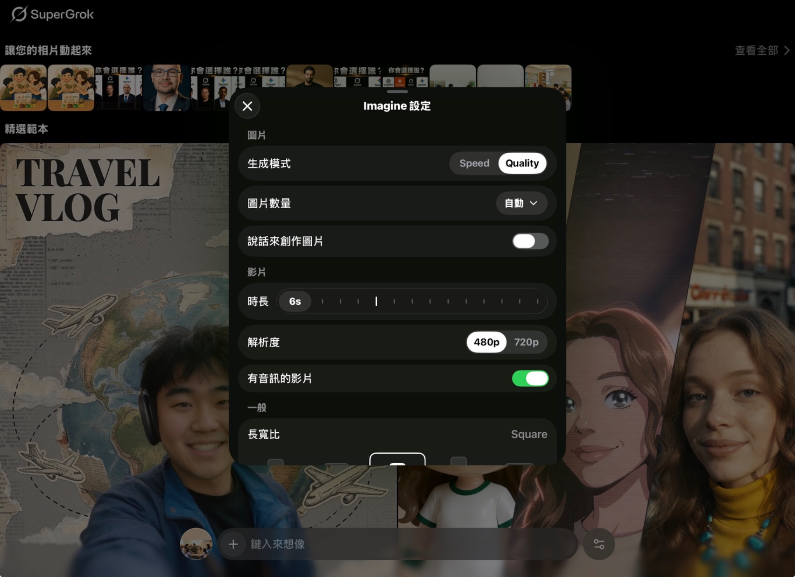
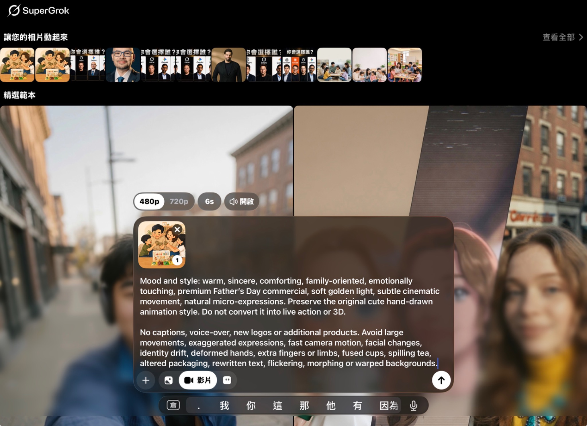
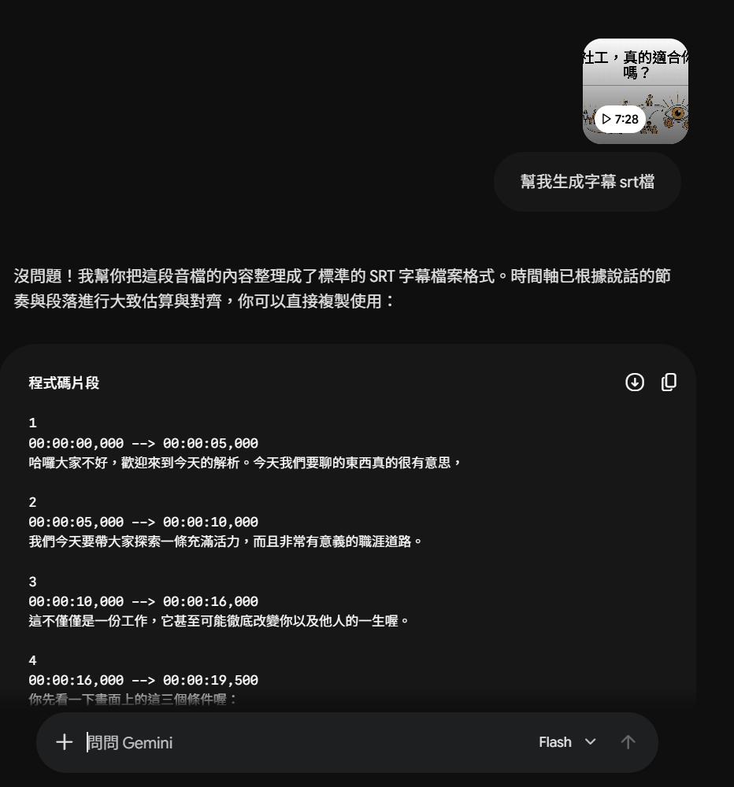
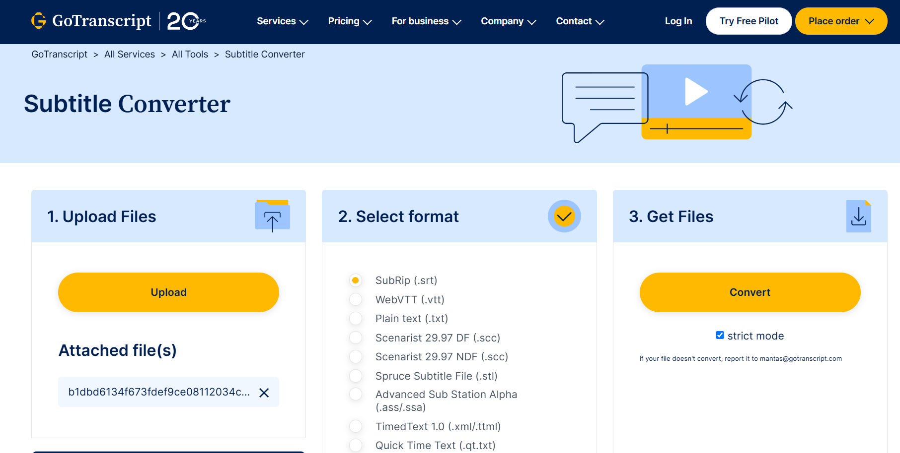
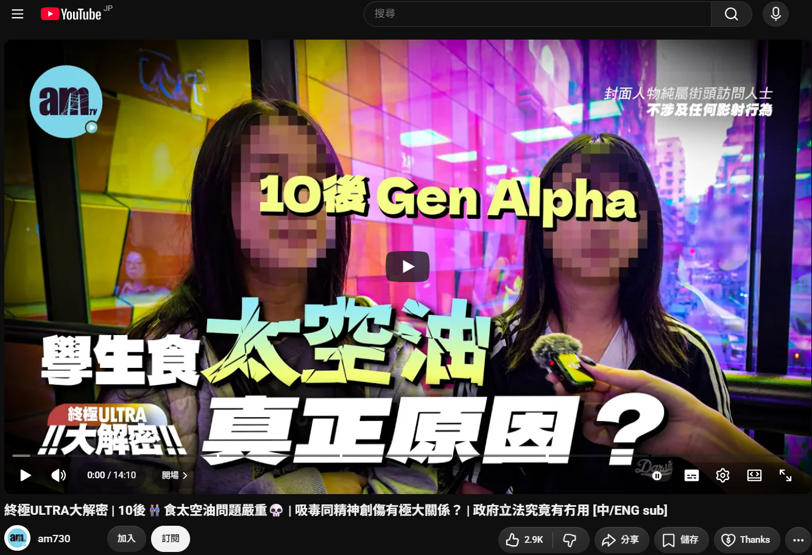
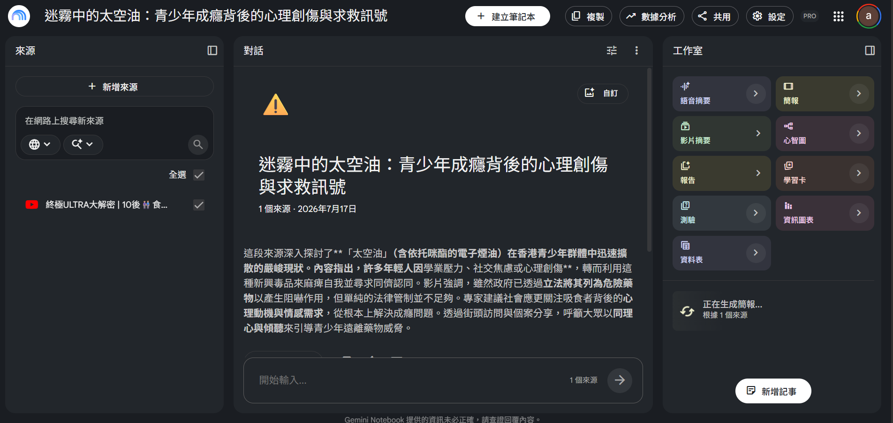
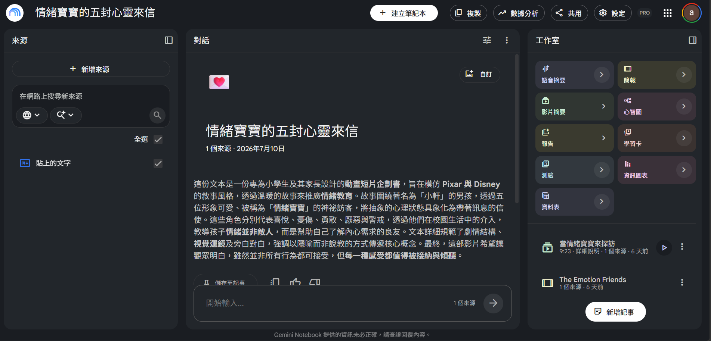
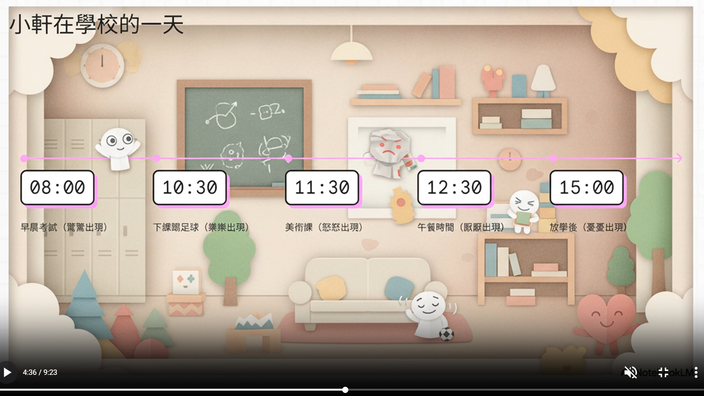

AI 像一位起草助手
它可以整理、改寫、歸納及構思，但不真正了解你的機構、案主或工作責任。
AI 前線工作工具箱
用平日說話，講出你想完成甚麼工作。
AI 可以協助你：整理文字、歸納資料、構思活動及製作圖片。它提供的是初稿，不是最後答案；你可以繼續叫它修改，最後再由自己檢查。
四個最常見用途
不用分辨 ChatGPT、Gemini 或 Copilot。先揀工作，跟住畫面逐步做。
目前工作
將筆記、紀錄或草稿整理成清晰、專業、可直接修改的文件。
將一段外展筆記整理成活動報告。
開始前，用一分鐘了解
它可以整理、改寫、歸納及構思，但不真正了解你的機構、案主或工作責任。
不用學專業寫法。好像向同事交代工作：做甚麼、給誰看、想要甚麼格式。
AI 可能自行補資料、誤解原意或引用錯誤。正式使用前，必須由人核對。
新手只要記住
AI 工作桌 · 整理及潤飾文字
請將以下內容整理成通順、專業而不過分官腔的繁體中文。保留原意，不要加入未提供的資料。內容將用於活動報告。
01 · 第一次用 AI
打開你平日使用的 AI，複製下面「改善版本」，再貼上一小段已刪除個人資料的文字。 不用背格式，也不用一次寫得完美。
幫我執下呢段文字。
AI 不知道用途、語氣，也不知道可否補充內容。
請將以下內容整理成通順、專業而不過分官腔的繁體中文。保留原意，不要加入未提供的資料。內容將用於活動報告。
不用每次全部寫齊。先自然地說；結果不合適，再看看欠缺哪一項。
請將以下活動筆記整理成活動報告（任務）。這是社福機構活動後的內部紀錄（背景）。請整理成三個段落及重點項目（成果）。使用繁體中文、保持原意，不要加入未提供資料（限制）。
進階選讀 · 工具接力
熟習基本對話後，才需要看這部分。 你可以先告訴 AI 想達到的效果，再請它整理成其他工具可用的步驟或指令。
「我想建立一份活動報名 Google Form，包括姓名、聯絡方法、活動選擇及注意事項。我不懂 Google Apps Script，請先幫我設計表格，再產生可使用的 Apps Script，並逐步教我如何執行。」
「我有一批活動、行政、宣傳及培訓文件。請根據以下文件名稱分析適合的分類方式，先提出資料夾架構及分類原則，不要自行移動文件。」
「我想製作一張活動宣傳圖片，但不懂寫 Image Prompt。請根據我的活動內容，幫我整理成適合圖片生成 AI 使用的 Prompt。」
「我想將這張圖片變成約 8 秒短片。人物只需要自然輕微移動，鏡頭慢慢推近，不要改變人物樣貌及原本構圖。請幫我寫成 Video Prompt。」
03 · 常用工作範本
做法只有三步：揀範本 → 把〔請填寫〕位置換成你的資料 → 複製到 AI。英文 Prompt 即是「給 AI 的工作要求」，不用背，也不是越長越好。
使用前：不要貼上姓名、電話、身份證、地址、完整案情或其他可辨識服務使用者的資料。
互動工具
先揀一個與 CCPSA 工作接近的情境，系統會填好合適人物、場景、氣氛及風格；你只需修改活動名稱和實際需要。
想畫甚麼？人物、物件、動作、表情或服裝。
在哪裡？例如中心活動室、屋邨、課室、跑步徑或球場。
甚麼時間或光源？例如日光、黃昏、陰天或室內燈光。
想呈現甚麼感覺？例如暖色、電影感、菲林感或柔和色調。
先完成以上四項，已經可以生成大部分活動宣傳、教材、簡報及社交媒體圖片。
鏡頭 Lens控制視角及景深，例如 85mm、50mm、24mm、f/1.4。
菲林感 Film Look加入攝影風格，例如 Kodak Portra、35mm Film、Fuji Film。
真實感 Realism加入毛孔、布料紋理、自然皮膚及自然光影。
避免事項 Negative Prompt減少塑膠皮膚、CGI、卡通感、過強 HDR 及多餘手指。
小貼士：記住概念，比記住整段 Prompt 更重要。下方產生器已把這些元素變成選項，按需要填寫即可。
填寫圖片主題後，Prompt 會顯示在這裡。
本地生成，不使用 AI token。互動工具
先套用一個社福服務情境，再修改動作、鏡頭及片長。短片以自然微動為主，較容易保持人物、服務形象及原圖穩定。
完成簡易設定後，撳「生成兩個版本」。
文字轉短片會描述完整畫面及動作。實例比較
將完全相同的影像指令分別交給 ChatGPT、Gemini 及 Grok。比較時不要只問「邊張靚」，亦要留意人物數量、活動內容、構圖留白及機構使用需要。
製作一張用於「社交媒體帖文」的專業機構宣傳攝影圖片。 圖片主題：童樂會，3個家庭（3父母＋3女童）。 畫面呈現五至八人、以家庭為主要對象，人物年齡組合為親子。 人物在中心活動室參與親子互動，採用小組圍坐，表情呈現真誠。 人物穿著日常便服。 畫面設定：中景互動、平視角度、明亮室內光、自然中性色、室內，不受天氣影響。 圖片比例為 A4 直向。 上方預留標題位置。 所有人物須穿著完整、端莊、符合年齡及活動場景的服裝；姿勢自然、中性、有尊嚴，鏡頭採用平視或其他自然角度，不聚焦身體敏感位置。畫面適合社會服務、戒毒輔導、健康教育及公開宣傳用途，避免性感化、暴力、血腥、污名化及不必要的痛苦呈現。 負面提示詞：避免手部、手指、五官及肢體變形，避免多餘或缺失肢體、人物比例錯誤、重複人物及錯誤透視；保留自然皮膚紋理，避免塑膠皮膚、蠟像感、過度磨皮、皮膚過度平滑無瑕及明顯 AI 感；避免性感化、暴露服裝、性暗示姿勢、不恰當角度、暴力、血腥、水印、Logo、亂碼及變形文字。
活動感較明確；人物及家庭組合接近要求，上方亦保留較多排版空間。
留白最充足、氣氛柔和；畫面較像親子小組，但人物關係仍需人手判讀。
人物互動集中、縮圖易讀；但輸出為正方形，並帶有平台標記，未完全符合 A4 直向及無 Logo 要求。
比較重點：同一 Prompt 不會保證相同結果，模型亦可能忽略比例、人物關係、Logo 或其他細節。正式使用前，應逐項核對並按需要重新生成或後期排版。
04 · 圖片、語音與短片
以下內容並非首次使用 AI 必須掌握，可按需要逐項展開。
輸入主題與用途，產生活動或宣傳圖片。
查看步驟、Prompt、成品及注意事項 →02 · 延伸讓現有圖片加入自然動作與鏡頭移動。
查看步驟、Prompt、成品及注意事項 →03 · 延伸加入人物微動、鏡頭及環境聲。
查看步驟、Prompt、成品及注意事項 →04 · 延伸只用文字描述，生成溫情家庭短片。
查看步驟、Prompt、成品及注意事項 →05 · 延伸用 Canva 或剪映把短句變成廣東話旁白。
查看步驟、Prompt、成品及注意事項 →06 · 延伸Gemini 轉錄、儲存字幕，再到 CapCut 校對。
查看步驟、Prompt、成品及注意事項 →07 · 延伸根據上載來源製作教材及影片概覽。
查看步驟、Prompt、成品及注意事項 →08 · 延伸輸入完整 Prompt，逐頁查看 Canva 生成的簡報成果。
查看步驟、Prompt、成品及注意事項 →整理文字、寫電郵、設計活動、搜尋資料、生成簡單圖片
圖片／文字轉短片、廣東話語音、SRT 字幕、NotebookLM 教材
Apps Script、試算表自動整理、多工具接力流程
05 · 熟習後再看
如果機構已指定你使用某一個 AI，可以先不用看這章。大部分日常文字工作，用你現有的工具已經可以開始；有特別需要時才比較。
搜尋、閱讀來源、整理長文件及建立資料摘要。
活動計劃、報告、電郵、會議紀錄及正式 Office 成品。
宣傳圖片、簡報初稿、字幕、旁白及圖片短片。
搵同讀
適合搜尋、閱讀長文件，以及將資料串連到 Google Workspace。
留意：AI 撮要仍可能拼錯資料；重要內容要打開原始來源核實。
諗同整
適合由未完整的想法開始，透過來回對話逐步發展成品。
留意：合理不等於正確；模擬案主只可作練習，不代表真實案主會這樣想。
落到文件
適合已經有資料，要直接在 Word、Excel、PowerPoint 等完成正式文件。
留意：免費聊天版與完整 Microsoft 365 Copilot 授權的整合能力有明顯分別。
追即時＋動起來
適合掌握網上及 X 的最新討論，亦可用 Grok Imagine 把文字或圖片轉成帶聲音的短片。
留意：熱門內容不等於可靠資料；人物、手部、文字、Logo 及產品包裝在動起來後可能變形。涉及真人相片亦要先取得同意，發布前逐格檢查。
讀完再講
適合把已上載的可信資料整理成有脈絡的學習內容，再生成簡報及影片概覽。
留意：有來源不等於零錯誤；簡報及影片仍可能出現事實或視覺不準確，發布前必須逐項核對。功能亦可能按帳戶、方案及地區而異。
AI 工具介紹 · 開啟後會見到甚麼
資料整合＋Google 工作流程
先看見：Google 帳戶、近期對話、中央提問框及模型選擇。
構思＋推敲＋創意製作
先看見：Chat／Work 模式、中央輸入框、專案、工具及建立圖像入口。
辦公文件＋機構行政落地
先看見：Microsoft 365 應用列、中央輸入框，以及改寫、解釋、校對等捷徑。
即時資訊＋圖像與短片創作
先看見：底部提問框、Fast 模式，以及創作影片、編輯圖像、語音、相機和文件分析捷徑。
來源為本＋簡報與影片概覽
先看見：左邊加入來源、中間上載檔案或搜尋資料、右邊工作室生成簡報、影片摘要及其他學習內容。
實際介面會按帳戶、方案、授權及更新而略有不同；圖中已聚焦主要操作區，示範時亦應避免展示個人對話或服務使用者資料。
三種簡單做法
將旁白拆成短句，較容易調整停頓、語速及畫面時間。生成後要完整聽一次，特別留意人名、機構名稱、英文縮寫及廣東話口語讀音。
方法一
方法二
完成範例 · 約 10 秒
以下短片示範把社工自我介紹拆成三段短句，再配上廣東話語音及同步字幕。播放時可留意每句停頓、字幕出現時間及讀音是否自然。
實際使用流程
以下兩部分放在一起看：先逐句生成廣東話語音，再逐句拖入時間軸對準字幕及畫面。
先生成語音
運動復元短片示例 · 再放入時間軸
以下以「運動復元」短片為例。旁白不一定要一次過生成；先將內容拆成短句，再逐句加入時間軸，會較容易控制每句開始時間、停頓及畫面配合。
父親節茶禮 · 圖片 → 短片
Grok 會把上載圖片當作起始畫面。短片 Prompt 的重點不是重複描述整張圖，而是交代動作、鏡頭、聲音，以及哪些元素必須保持不變。
先選一張構圖完整、人物手部清楚、產品文字較易辨認的圖片。
播放並逐格留意人物樣貌、手指、茶杯、包裝文字及背景有沒有漂移或變形。


Mood and style: warm, sincere, comforting, family-oriented, emotionally touching Father's Day commercial, soft golden light, subtle cinematic movement, natural micro-expressions. Preserve the original cute hand-drawn animation style. Do not convert it into live action or 3D. The camera slowly pushes in. The family gently raises their cups and makes a small toast; subtle steam rises from the tea. Add soft indoor ambience and a light ceramic cup clink. No captions, voice-over, new logos or additional products. Avoid large movements, exaggerated expressions, fast camera motion, facial changes, identity drift, deformed hands, extra fingers or limbs, fused cups, spilling tea, altered packaging, rewritten text, flickering, morphing or warped backgrounds.
例如「緩慢推鏡＋輕碰杯」。六秒內塞太多情節，較容易令人物、手部及產品失真。
指定畫風、人物身份、包裝、文字、Logo、鏡頭方向及構圖不要改變。
如只需要環境聲及杯碰聲便直接寫明；不想有旁白、對白或音樂亦要說清楚。
AI 影片可能在動作中途短暫變形；宣傳使用前要完整播放，必要時重新生成或剪走問題畫格。
功能界線：官方資料確認 Grok Imagine 支援以單張圖片作第一格，並生成動作及同步音訊。網站示例展示 6 秒短片，而介面可見約 6–15 秒選項；可選時長、解像度、速度及使用額度仍可能按版本、方案、地區及裝置不同，以你當下介面為準。
例子 02 · 圖片 → 短片
部分工具可在上載圖片後直接生成短片，由 AI 自行判斷物件動作、鏡頭移動及環境變化。操作較快，適合先試效果；但可控制的細節較少，每次結果亦可能不同。
只提供圖片，不輸入動作、鏡頭或聲音指示。
AI 自行安排動物、飛鳥、水面及鏡頭動態；播放後仍要檢查物件有沒有突然出現、消失或變形。
何時適合不用 Prompt：想快速預覽一張圖片可以如何動起來，或尚未決定具體動作時。若要控制人物表情、產品文字、指定鏡頭或聲音，仍建議加入簡短 Prompt。
例子 03 · Canva AI · 圖片 → 短片
Canva AI 的操作邏輯與 Grok 類似：先加入起始圖片，再用文字交代動作、鏡頭及要保留的元素，最後按用途選擇影片格式、質素、風格與音訊等設定。
在 Canva AI 選擇「影片片段」，加入圖片及文字 Prompt；再按用途設定質素、風格、寬高比、音訊、加框及光線。
生成可能需要一段時間。完成後先播放，檢查人物樣貌、手部、茶杯、產品包裝及文字有沒有變形或漂移。
03 · 約 8 秒生成成品
這段成品沿用父親節茶禮圖片及相近 Prompt。可與上方 Grok 版本比較人物動作、鏡頭移動、畫面穩定度、聲音及原圖保留程度。
介面提示：你看到的格式、質素、風格、寬高比及音訊選項，可能按 Canva 帳戶、方案、地區與更新而不同；生成前以當下介面顯示為準。
例子 04 · Canva AI · 文字 → 短片
沒有起始圖片時，Prompt 除了動作，亦要交代人物、場景、鏡頭、氣氛及前後一致要求。以下示範由文字開始，讓 Canva AI 建立一家人飲茶、乾杯的完整畫面。
選擇「影片片段」，直接描述一家四口飲茶、乾杯，以爸爸為中心人物；再交代鏡頭、氣氛、片長、比例、背景動態及聲音。
請製作一段用於「溫情故事」的文字生成短片。 主要畫面及動作：一家四口同爸爸飲茶、乾杯；爸爸坐在中間作為中心人物，家人望向爸爸，互動自然。 鏡頭緩慢推近，動作幅度輕微自然。整體氣氛溫暖自然，片長約 15 秒，畫面比例為 16:9 橫向短片。 由全家人望向茶盒開始，以一起舉杯微笑結束。窗簾輕微擺動，茶面有少量熱氣。四位人物的外貌、服裝和場景前後一致。 加入柔和室內環境聲及輕微杯子碰撞聲，不要旁白。避免人物或物件變形、動作忽快忽慢、畫面閃爍、背景扭曲、突然增加或消失人物，以及生成不需要的文字、Logo 或水印。
提示：文字生成沒有原圖作參考，所以人物樣貌與場景由 AI 自行建立；「前後一致」是要求，但仍要在成品中人手檢查。
02 · 約 8 秒文字生成成品
Canva AI 根據文字建立人物、客廳、飲茶動作及整體氣氛。Prompt 雖提出約 15 秒，這次實際成品約 8 秒，亦反映生成長度未必完全跟從文字要求。播放時可留意人物有沒有前後一致、乾杯動作是否自然，以及杯子、手指及視線有沒有短暫變形。
兩種模式的分別：圖片轉短片主要描述「原圖點樣郁」；文字轉短片則要同時描述「畫面是甚麼」及「畫面點樣郁」。同一段 Prompt 每次生成的家庭成員、服裝、構圖及細節都可能不同。

由音訊去到字幕檔
在 Gemini 加入 MP3、MP4 或其他受支援的音訊／影片檔。
交代字幕語言，以及保留廣東話自然口語或整理成易讀書面語。
下載程式碼區塊，或複製到純文字檔並將副檔名改為 .srt。
把 .srt 匯入剪片項目，檢查字幕有否成功讀取及對準畫面。
.srt。完整實例 · 由字幕文字到有字幕短片
以下用一段約 6 秒短片示範。AI 可以幫你起稿，但字幕內容、斷句及時間位置仍要在剪輯軟件內逐句核對。
上載影片後，請 Gemini 核對廣東話內容，按說話停頓列出字幕及建議時間。
下載字幕檔；如只得到文字，可複製到純文字檔並儲存為 .srt。避免檔名重複出現 .srt.srt。
在 CapCut／剪映打開字幕工具，選擇「匯入字幕」，再選剛才儲存的 SRT 檔。
播放影片，逐句拖動字幕起點和終點；修正錯字、斷句、語氣詞及畫面遮擋。
05 · 最後成品
完整播放一次，確認每句字幕出現和消失的時間、文字位置及可讀性。確認無誤後，才由 CapCut 匯出影片。

CapCut／剪映讀不到？
留意：轉檔通常可修正格式兼容問題，但不能保證修復錯誤時間碼或缺漏內容。這是第三方網站；含個案或敏感內容的字幕，不應上載。
檔案種類、時長及上載限額會按帳戶方案而異。Google 目前說明一般帳戶的音訊總長可達約10分鐘、影片總長約5分鐘；Google AI Pro／Ultra 的上限較高，實際仍以介面顯示為準。
案例 01 · YouTube 影片 → 簡報
將公開影片加入為來源，NotebookLM 會讀取可用的字幕／逐字稿，再按指定對象、語言及重點整理成簡報。

選擇公開、有字幕而且來源可靠的 YouTube 影片。

先核對摘要及引用，再到右方「工作室」選擇「簡報」。
按「新增來源」，選 YouTube／網站並貼上連結。
查看來源摘要及引用，確認影片重點有被正確擷取。
在「工作室」選「簡報」，設定繁體中文、對象、長度及焦點。
逐頁對照來源，修正內容及視覺，再下載 PDF／PowerPoint 分享。
根據這個 YouTube 來源，為戒毒／戒賭前線同工製作一份 8 頁繁體中文簡報。請先交代影片背景，再整理成癮風險、青少年可能發出的求救訊號、前線同工可採取的回應及求助資源。每頁只保留一個核心訊息，使用尊重、非污名及不恐嚇的語氣；只採用來源能支持的內容，未能核實的地方請清楚標示。
Canva 現場示範 · 緊接 NotebookLM 簡報
另一種做法，是直接在 Canva AI 交代頁數、比例、對象、語氣及內容結構，再由 Canva 同時整理文字與版面。
先看 Prompt，再查看 Canva 生成的第 1–10 頁。每張圖片均可點按放大。
請製作一份10頁、16:9橫向的簡報，主題是： 「心理動力學簡介：拆解你腦海裡的隱形動力」 對象是沒有心理學基礎的一般成年人或初學者。 請不要用艱深的學術語言，而要用簡單、生活化、有趣的香港廣東話解釋心理動力學，讓觀眾明白潛意識、童年經驗及人際關係，如何影響成年後的情緒、選擇和行為。 簡報核心問題： 「點解我會咁？」 「點解有時明知唔應該，仍然會做？」 「點解童年經歷會影響成年後的自己？」 請集中介紹以下內容： 1. 心理動力學是甚麼 說明心理動力學不是死板理論，而是理解日常生活中看不見的心理力量，如何影響人的決定、情緒和行為。 2. 意識與潛意識 使用冰山作比喻，解釋人能察覺的意識只是表面，水面下還有恐懼、慾望、記憶、衝突和需要。 3. 本我、自我、超我 用生活化例子解釋三者的衝突。 例如面對食物時： 本我想立即享受； 超我要求守規矩； 自我負責在現實中協調兩者。 4. 心性發展與童年經驗 簡單介紹口腔期和肛門期，但不要只從字面或性慾角度解釋。 口腔期重點： 嬰兒透過被餵食、被回應及被照顧，建立安全感和對世界的信任。 肛門期重點： 小朋友開始發現自己可以控制身體和表達意願，與自主、控制及界線有關。 說明早期經驗可能與成年後的不安全感、控制傾向、完美主義或混亂感有關，但避免寫成必然因果。 5. 自體心理學 介紹鏡映 Mirroring： 小朋友需要透過照顧者的目光和回應，感受到「我存在、我有價值、我是被愛的」。 說明如果長期缺乏適當回應，成年後可能較依賴別人的認同、讚好、成就或名氣確認自我價值。 6. 理想化 Idealizing 解釋青少年為甚麼會崇拜強大、成熟或有魅力的人。 指出這不一定是性吸引，而可能是透過認同及仰慕他人，暫時借用對方的力量，建立自己的身份和自信。 7. 心理治療觀念的轉變 比較傳統的一人心理學和現代的二人心理學。 傳統模式： 治療師是權威，負責分析及詮釋個案的潛意識。 現代關係取向： 治療師和個案共同探索，治療關係本身也是改變和療癒的一部分。 說明穩定、可信任的關係，可能幫助一個人重新經驗安全、被理解及被接納。 8. 總結 整理三個重點： 人的行為不只是由理性決定，也受到未被察覺的心理歷程影響。 成年後的焦慮、控制、認同需要，有時與早期未被滿足的心理功能有關。 當一個人被準確理解、看見和回應，較容易建立穩定的自我感。 9. 結語 用一句有力量、容易記住的說話作結： 「當潛意識被看見，你才真正擁有選擇。」 每頁只介紹一個主要概念。 每頁包括： - 一個簡短標題 - 2至4句重點 - 一個生活化例子或比喻 - 一個適合視覺化的象徵圖像 語氣要溫暖、親切、有反思感，不要像大學教科書。 避免過多術語、人物生平、歷史年份及複雜理論爭論。
開啟 Canva AI，在設計類型選擇「簡報」。
交代頁數、比例、受眾、語言、內容重點及視覺方向。
刪減文字、換圖、調整次序，並補回可信資料來源。
核對專業概念、例子、圖片、版權及繁體字，才公開使用。
案例 02 · 文件／文字 → 短片
以「情緒寶寶的五封心靈來信」文字作來源，先讓 NotebookLM 整理內容，再於工作室選擇「影片摘要」，生成給家長觀看的親職資訊短片。

左方加入經核實的親職資訊；右方工作室選「影片摘要」，再按家長對象、情緒教育主題及語氣自訂。

短片以學校一天的時間線，把不同情緒角色及兒童需要變成家長容易理解的視覺故事。
由圖片或文字去到可用工具
Google Apps Script 是 Google Workspace 的自動化工具，可以用程式建立及修改 Forms、Sheets、Docs、Gmail 等。
這個示範的重點不是叫同事由零學寫程式，而是先移除可識別機構的資料，再讓 AI 整理問卷、產生程式碼，最後由人核對、執行及加回機構資料。
先移除機構／中心名稱、Logo 及其他可識別資料，再上載清晰掃描圖。AI 會逐題辨認內容，並安排合適題型，例如單選、下拉式選單、簡短回答、多選或其他格式。
逐題寫出題目、題型及選項；資料較清晰，亦更容易核對。
1. 你所屬的單位代別（簡短回答）2. 你的職位（下拉式選單：社工／導師／行政／其他）3. 你使用的 AI 工具有甚麼？（多選：ChatGPT／Gemini／Copilot／其他）方法二｜使用 Google Apps Script 自動建立 Google Form
將已整理好的問卷程式碼貼入 Google Apps Script，執行後可一次建立 Google Form、回應試算表，以及取得表單編輯、填寫及試算表網址。
適合：題目及選項已確定，希望減少逐題手動輸入的人。
操作步驟 1
開啟 Google Apps Script，建立新專案，將完整程式碼貼入「程式碼.gs」，並選擇正確的執行函數。
手機及平板可左右滑動切換步驟；大圖可用雙指縮放。
使用已去識別的掃描圖，或直接整理每題文字、題型及選項。
把內容放入 Gemini、ChatGPT、Copilot 等 AI，請它逐題整理題目、題型、選項、必答及分節，再由人核對。
const form = FormApp.create("問卷名稱");
const sheet = SpreadsheetApp.create("問卷回覆");
form.setDestination(
FormApp.DestinationType.SPREADSHEET,
sheet.getId()
);確認題目後，請 AI 生成完整 Apps Script，用來建立 Google Form 及連結回應試算表。
複製 AI 生成的完整程式碼，貼到 Google Apps Script 編輯器；儲存後選擇函式並按「執行」。首次執行須完成 Google 授權。
開啟建立好的 Google Form 逐題測試；確認正確後，才加回中心／機構名稱及 Logo。
現場示範說法
「我先準備已去除識別資料嘅掃描圖，或者直接打出每題文字，再放入 Gemini、ChatGPT 或 Copilot。核對題目同題型後，叫 AI 寫完整 Apps Script；然後複製程式碼，貼入 Google Apps Script，儲存、選擇函式並按執行。最後逐題測試，確認正確先加返正式機構資料。」
要講清楚：必須先移除機構／中心名稱、Logo 及其他可識別資料，才把問卷放入 AI。完整流程是「準備內容 → AI 整理及人手核對 → AI 生成程式碼 → 複製到 Google Apps Script → 授權執行 → 測試 → 加回機構資料」。這不是掃描後自動完成；Apps Script 第一次存取 Forms 或 Sheets 時會要求 Google 帳戶授權。
06 · 進階選讀
這部分不是新手必讀。當你已經能用 AI 整理文字、修改答案及檢查內容，才需要了解多工具流程。每次通常選一至兩個工具已經足夠。
多工具接力示例
同一項工作可按需要串連來源整理、活動設計、簡報及宣傳工具。
先寫清楚教育目標、青年背景、時長及限制。
搜尋官方研究、核實資料並保留來源。
設計活動流程、內容、情境題及 Debrief。
整理來源並製作教材、簡報或影片概覽。
製作正式 Word、PowerPoint 或 Excel 文件。
按需要製作宣傳圖片或短片。
修正資料、語氣及風險，確認後才發布。
02 · 使用前後要檢查
不論是否工作所需，個人敏感資料或可識別資料都不可輸入或上載至 AI。AI 產生的內容只可作為初稿，最後必須由同工核對及修改。
以下資料不可輸入或上載：
不只刪除姓名，亦要刪減能夠互相拼合的細節。
葵涌邨張先生，50歲，有十年吸毒史，女兒正在附近一間小學就讀。
一名成年服務使用者，有物質使用背景，正面對家庭及照顧壓力。
發布、交付或放入正式紀錄前，逐項核對。
有沒有遺留姓名、地點、日期或可辨認資料？
政策、津貼、法律、醫療及服務資料是否已查證？
用語是否尊重、準確，避免標籤化或污名化？
圖片、Logo、版權、格式及機構要求是否正確？
按目前機構工具配置
Gemini 作日常資料入口，Copilot 處理正式 Office 成品，ChatGPT 集中做活動設計、網頁原型及深度推敲；需要把宣傳圖快速變成短片時，可用 Grok Imagine 試作，再由同工逐格覆核。
功能會因地區、方案、授權及管理員設定而異；涉及個案資料時，以機構最新書面政策為準。
完成一節後
按你下一項要完成的工作，再揀 Prompt 或教學。
返回「你今日想完成甚麼工作？」07 · AI 工具分類指南
這裡把常見 AI 工具按用途整理成 7 類，每類精選 5 款較多人認識的工具，方便快速參考。
不需要一次過全部認識；先由自己最常做的工作開始便可以。
以文字提示生成圖像，較多人用於藝術風格、概念圖及視覺創作。
主要特色風格化圖像生成
Adobe 的生成式 AI 創作工具，可生成及編輯圖像，並與 Adobe 工作流程配合。
主要特色Adobe 創作流程整合
利用 AI 協助製作社交媒體圖片、海報及其他設計內容。
主要特色快速製作宣傳視覺
提供圖像生成及編輯功能，可用於概念圖、設計素材及創意視覺。
主要特色圖像生成與細緻控制
一系列開放權重的圖像生成模型，可透過不同平台或本機工具使用。
主要特色可自行部署及調整
多用途 AI 助手，可協助寫作、研究、分析檔案、解答問題及處理多步驟工作。
主要特色用途廣泛及多工具整合
Google 的 AI 助手，可協助研究、寫作、規劃及處理不同形式的內容。
主要特色配合 Google 生態系統
Microsoft 的 AI 助手，可配合網頁及 Microsoft 365 工作流程使用。
主要特色配合 Microsoft 工具
Anthropic 的 AI 助手，適合寫作、分析文件、研究及處理較長的內容。
主要特色長內容與文件分析
xAI 的 AI 助手，可回答問題、協助創作，並可使用網絡及 X 平台的公開資訊。
主要特色結合近期網絡資訊
以使用者提供的來源為基礎，協助摘要、研究、提問及製作相關內容。
主要特色以指定來源作答
整合於 Notion 工作空間，協助搜尋、撰寫、摘要及整理團隊資料。
主要特色工作空間與知識整合
在 Confluence 及 Atlassian 工作流程內協助建立、整理及搜尋團隊內容。
主要特色團隊知識庫整合
以 AI 協助記錄、整理及搜尋個人或工作筆記。
主要特色自動整理與搜尋筆記
團隊知識庫工具，可整理內部資料，並協助同事搜尋常見問題答案。
主要特色內部知識共享
08 · 值得知道的 AI 新發展
不用追逐每一項 AI 更新；掌握其對前線工作的影響、限制與責任，才是重點。
AI 已逐步用於整理會議內容、摘要文件、草擬活動紀錄、建立簡報及準備服務報告初稿。
AI 即使根據指定文件回答，仍可能：
以下資料單獨或互相配對後，仍可能令人辨認服務使用者：
「一名住在某屋邨的50歲男士，有十年吸毒史，女兒正在附近一間小學就讀。」
「一名成年服務使用者，有物質使用背景，正面對家庭及照顧壓力。」
社工、護士、朋輩輔導員及其他前線同工
讓同工將更多時間放回：關係建立、專業判斷、同行支援及直接服務。
海外指引及案例只供實務參考。香港機構仍須按本地法例、專業守則及機構政策處理資料及使用 AI。